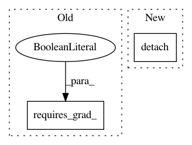

75638add97f13e7a29e3ed87f2924308c6950f14,test/lazy/test_added_diag_lazy_tensor.py,TestAddedDiagLazyTensor,create_lazy_tensor,#TestAddedDiagLazyTensor#,13
Before Change
def create_lazy_tensor(self):
tensor = torch.randn(5, 5)
tensor = tensor.transpose(-1, -2).matmul(tensor)
tensor.requires_grad_(True)
diag = torch.tensor([1.0, 2.0, 4.0, 2.0, 3.0], requires_grad=True)
return AddedDiagLazyTensor(NonLazyTensor(tensor), DiagLazyTensor(diag))
def evaluate_lazy_tensor(self, lazy_tensor):
After Change
def create_lazy_tensor(self):
tensor = torch.randn(5, 5)
tensor = tensor.transpose(-1, -2).matmul(tensor).detach()
diag = torch.tensor([1.0, 2.0, 4.0, 2.0, 3.0], requires_grad=True)
return AddedDiagLazyTensor(NonLazyTensor(tensor), DiagLazyTensor(diag))
def evaluate_lazy_tensor(self, lazy_tensor):
In pattern: SUPERPATTERN
Frequency: 5
Non-data size: 2
Instances
Project Name: cornellius-gp/gpytorch
Commit Name: 75638add97f13e7a29e3ed87f2924308c6950f14
Time: 2019-03-18
Author: gpleiss@gmail.com
File Name: test/lazy/test_added_diag_lazy_tensor.py
Class Name: TestAddedDiagLazyTensor
Method Name: create_lazy_tensor
Project Name: cornellius-gp/gpytorch
Commit Name: ead5e85fd324c8ccfc6f765cf9ee8954cda4cf20
Time: 2019-03-30
Author: jrg365@cornell.edu
File Name: gpytorch/lazy/cached_cg_lazy_tensor.py
Class Name: CachedCGLazyTensor
Method Name: __init__
Project Name: ray-project/ray
Commit Name: d5604eaba321c11c1b9616c283262c4ddea55049
Time: 2020-12-21
Author: sven@anyscale.io
File Name: rllib/models/torch/modules/relative_multi_head_attention.py
Class Name: RelativeMultiHeadAttention
Method Name: forward
Project Name: cornellius-gp/gpytorch
Commit Name: 75638add97f13e7a29e3ed87f2924308c6950f14
Time: 2019-03-18
Author: gpleiss@gmail.com
File Name: test/lazy/test_added_diag_lazy_tensor.py
Class Name: TestAddedDiagLazyTensorBatch
Method Name: create_lazy_tensor
Project Name: rtqichen/torchdiffeq
Commit Name: e286d8f9b3e1e6a29d99108c1d96b3ed9e0f6672
Time: 2020-09-04
Author: rtqichen@gmail.com
File Name: torchdiffeq/_impl/odeint.py
Class Name: ImplicitFnGradientRerouting
Method Name: backward